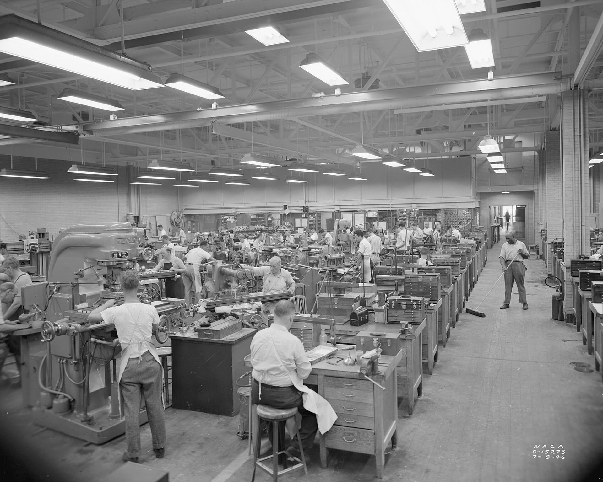
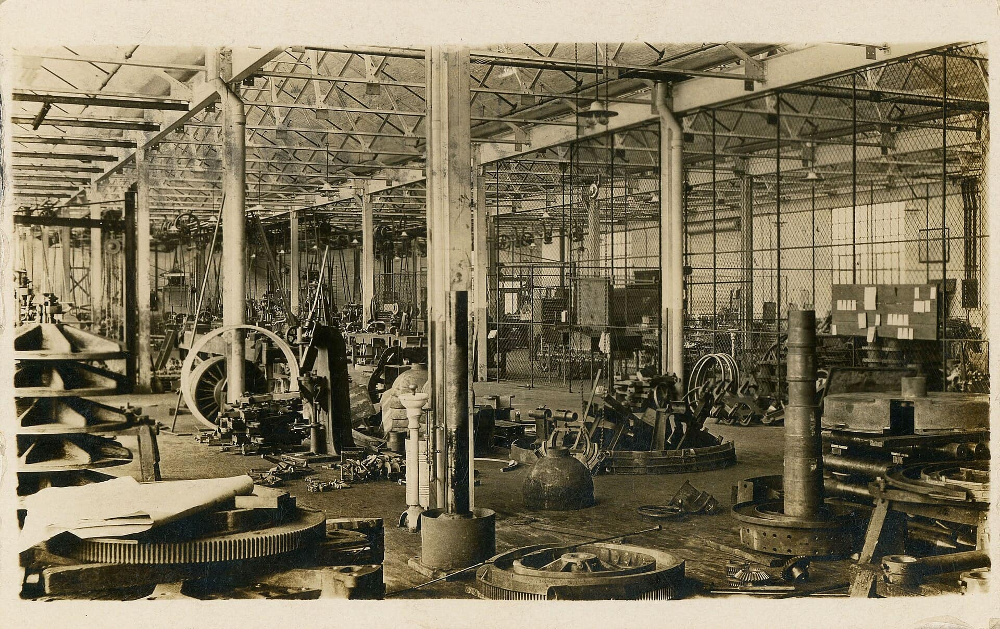
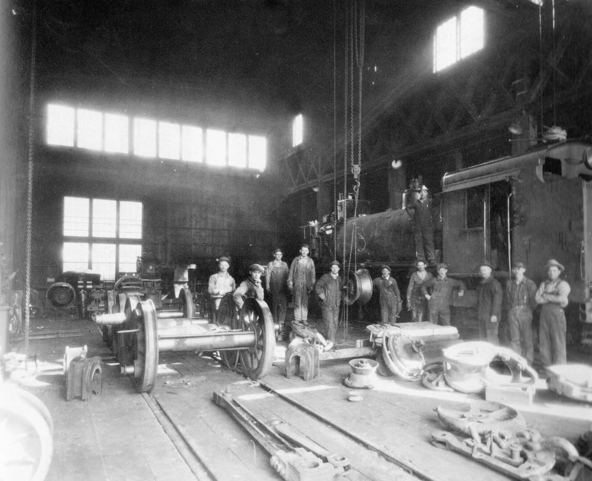
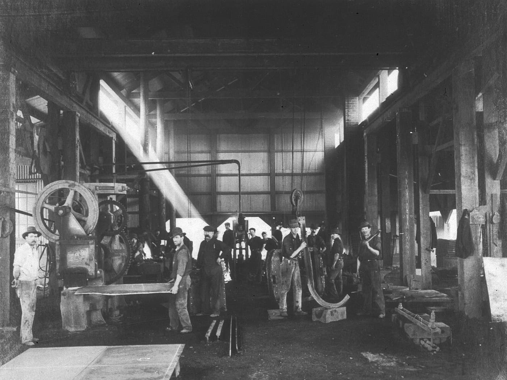
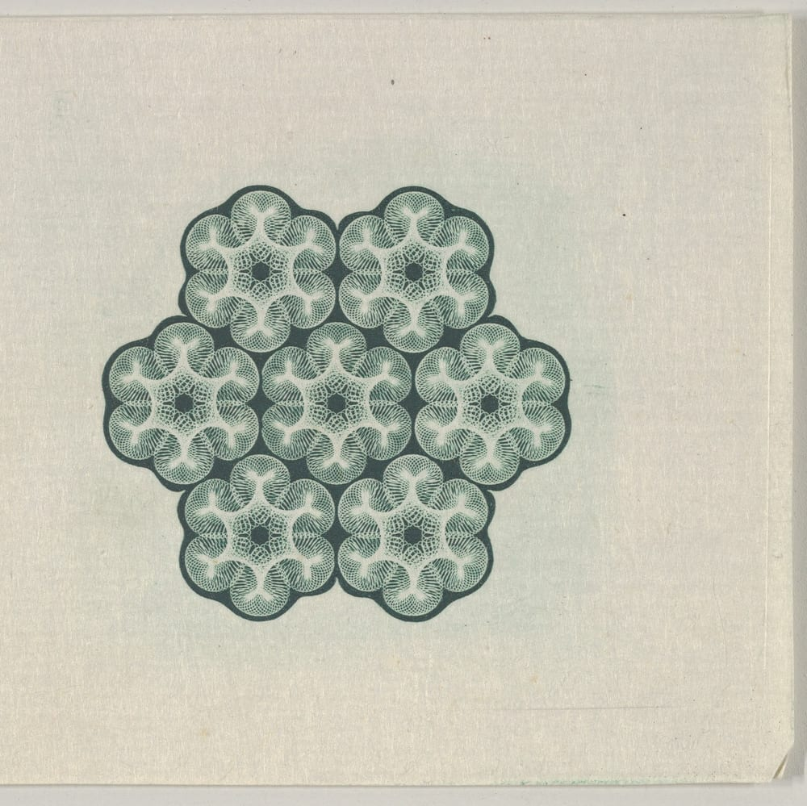

Eksen Talaşlı İmalat
CNC torna ve freze, tek parçadan seriye.
CNC torna ve freze, tek parçadan seriye.
Teklif isteHassasiyeti görün
Çiziminizdeki toleransı birlikte konuşuruz, parçayı ona göre üretir ve her parçayı ölçeriz.
Bir saç teli yaklaşık 0,07 mm kalınlığındadır. Sağdaki çubuğu kaydırıp seçtiğiniz toleransın saç teline göre ne kadar dar olduğunu görün.
Hakkımızda
- İşler
- Tek parça, prototip, seri
- Malzeme
- Çelik, paslanmaz, alüminyum, pirinç, plastik
- Çizim
- PDF, DXF, STEP
Küçük bir atölyeyiz, her işe usta gözüyle bakarız. Parça gelir, çizim okunur, ölçü netleşmeden tezgâha çıkmaz.

Neler üretiyoruz
- CNC tornaØ 8 – 400 mm
- CNC freze800 × 500 × 500 mm
- Tel erozyonSertleştirilmiş parçalar
- TaşlamaYüzey ve silindirik
- Kaynaklı imalatKonstrüksiyon, bağlantı
- MontajAlt gruplar
Ölçüler örnektir, atölyenizin makine parkuruna göre değiştirilir.


İş nasıl ilerler
- Çizim gelir
PDF, DXF veya STEP dosyasını gönderirsiniz.
- Teklif hazırlanır
Malzeme, adet ve termin yazılı olarak netleşir.
- Üretim
Parça tezgâha çıkar, ara ölçüler alınır.
- Ölçüm
Kritik ölçüler kontrol edilir, sonuç parçayla birlikte gider.
- Sevkiyat
Paketlenir ve belirlenen adrese gönderilir.
Makine parkurundan rakamlar
- ±0,01 mm
- Ulaşılabilen tolerans, uygun malzeme ve parçada
- Ø 400 mm
- Torna tezgâhında en büyük işleme çapı
- 5 eksen
- Karmaşık yüzeyleri tek bağlamada işleme
Rakamlar örnektir, atölyenizin gerçek değerleriyle değiştirilir.
Sık sorulanlar
Hangi çizim dosyalarını kabul ediyorsunuz?
PDF, DXF ve STEP dosyalarıyla çalışırız. Çizimi olmayan parçalar için numune ile de iş alabiliriz.
Tek parça da üretiyor musunuz?
Evet. Tek parça, prototip ve seri üretim aynı atölyede yapılır.
Malzemeyi siz mi temin ediyorsunuz?
İki şekilde de çalışırız: malzemeyi biz alırız ya da sizin getirdiğiniz malzemeyi işleriz. Teklifte hangisi olduğu yazılır.
Ölçü raporu veriyor musunuz?
İstenen kritik ölçüler için ölçüm sonucunu parçayla birlikte veririz.